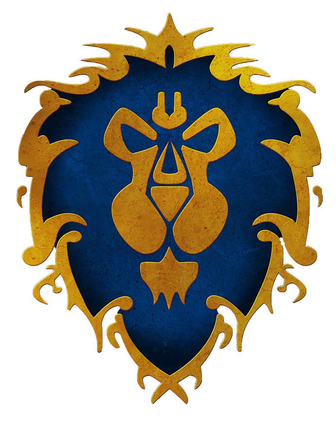
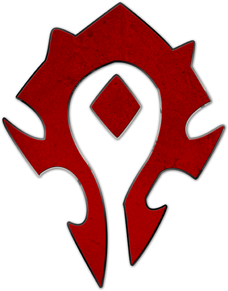

Game History
World of Warcraft was first released in 2004 and quickly became one of the most popular MMORPGs in the world. The game is set in the fantasy world of Azeroth, where players can choose from different races and classes to embark on epic adventures, complete quests, and defeat powerful foes.
Fractions and Races
In World of Warcraft, players can choose to align themselves with either the noble Alliance or the fierce Horde. Each faction has its own unique history, races, and goals, shaping the world of Azeroth with their ongoing conflicts and alliances.
Alliance
Horde
Classes
Warrior
A fierce melee fighter with strong armor and weapon skills.
Paladin
A holy knight who combines martial skills with divine magic.
Hunter
A skilled archer and tracker who tames and commands beasts.
Rogue
A stealthy assassin who relies on agility and sneak attacks.
Priest
A healer and spellcaster who wields divine and shadow magic.
Shaman
A spiritual leader who commands the elements for healing and damage.
Mage
A spellcaster who wields powerful arcane magic to damage enemies.
Warlock
A dark spellcaster who summons demons and harnesses dark powers.
Monk
A martial artist who channels chi energy for offense and defense.
Druid
A shape-shifter who can take on various forms and wield nature magic.
Demon Hunter
A warrior who infuses themselves with demonic power to hunt demons.
Death Knight
A former hero turned undead servant of the Lich King.
Evoke
A master of summoning and controlling demons to aid in battle.
Gameplay Rules
In World of Warcraft, players can choose to be part of the Alliance or the Horde, two opposing factions in the world of Azeroth. Players can engage in PvE (player-vs-environment) activities such as questing, dungeon raids, and exploration, or participate in intense PvP (player-vs-player) battles in arenas or battlegrounds.
Gameplay Details
World of Warcraft offers a rich and diverse gaming experience with various gameplay aspects:
- PvP and PvE: Players can choose to focus on player-vs-player battles or player-vs-environment activities such as questing, exploring, and dungeon raids.
- Instances and Raids: Engage in challenging instances and raids with a group of players to defeat powerful foes and earn epic rewards.
- Roles in Groups: In group content, players take on different roles: Tanker, Healer, and Dealer (Damage Per Second). Tankers protect the group by drawing enemies' attention, Healers keep the group alive, and Dealers deal damage to enemies.
- Cooperative Gameplay: Team up with other players to tackle difficult challenges, quests, and events, fostering a sense of camaraderie.
- Item Acquisition: Collect gear and equipment through quests, dungeons, raids, and crafting to enhance your character's power.
- Professions: Engage in various life skills such as fishing, cooking, gathering, and crafting to create items and earn gold.
- Questing and Leveling: Embark on quests to explore the game world, uncover its lore, and level up your character.
- World Quests: Engage in dynamic and rewarding world quests that pop up across the game world, offering a variety of activities.
Best Tips and Strategies
Mastering the game requires a combination of skill, teamwork, and strategy. Here are some tips to help you succeed in World of Warcraft:
- Always be prepared for tough battles by having the right gear and consumables.
- Join a guild or a group of like-minded players to tackle challenging content together.
- Study boss mechanics and tactics to excel in raid encounters.
- Stay up-to-date with game updates and patches to stay competitive.
Class Recommendation
As someone who has spent countless hours exploring the realms of Azeroth, I'd like to offer a personal recommendation for newcomers: the Hunter class. For beginners, choosing the Hunter class can be a fantastic choice. Hunters have the unique ability to tame pets, which can serve as a loyal companion in battles, drawing aggro and allowing you to attack from a safe distance. This can be especially advantageous for those who prefer not to be directly in harm's way. Whether you're wandering the forests or facing fearsome foes, having a trusty pet by your side can greatly enhance your adventure in World of Warcraft.
Additionally, if you're looking for a versatile experience and want to try your hand at tanking, healing, and dealing damage, I highly recommend the Druid class. Druids have the ability to shapeshift into different forms, allowing them to fulfill different roles within a group. Whether you want to tank enemies as a bear, heal your allies as a tree, or deal damage in various forms, the Druid class offers a unique and varied playstyle that can provide a well-rounded experience for players.